Configure Salesforce for API Data Protection
To configure Salesforce for API Data Protection, you need to authorize Netskope as a web application client to access your Salesforce instance.
There are four parts to this procedure:
Configure Salesforce API Access
Enable Listing of Private Files of Users
(Optional) Install Netskope Audit Reports and Legal Hold Destination Apps
Configure Netskope Access for Salesforce
Configure Salesforce API Access
Note
The following steps are validated with Salesforce Lightning mode and may not apply to Classic mode. Lightning mode is not a requirement to run Netskope API Data Protection. You can configure using Classic mode as well. To switch to the Lightning Experience UI, log in to login.salsesforce.com and on the top-right of the home page, click the User menu drop-down list and select Switch to Lightning Experience.
To authorize Netskope as a web application client to access your Salesforce instance, you should create a custom profile on the Salesforce portal.
Important
Netskope recommends creating an exclusive custom profile for the Netskope app. If you intend to run any custom processes or scripts (other than the Netskope app), create a separate custom profile. Do not use the exclusive custom profile intended for the Netskope app for custom processes or scripts (like bulk uploads, etc.) because they may interfere with the Netskope app.
Log in to login.salesforce.com.
On the top right, click Setup > Setup.
In the left navigation bar, go to Administration > Users > Profiles.

Clone a user profile. You can clone a system administrator, standard user, read-only, or any other profile. Ensure that the user profile has an active "Salesforce" license. In this example, click Clone beside the Custom: Support Profile.
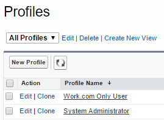 On the Clone Profile page, enter a profile name and make sure the User License shows Salesforce . When finished, click Save.
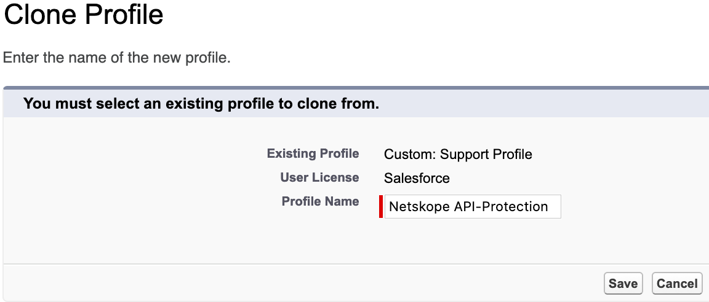 After creating the custom profile, click Edit to modify the custom profile.
Scroll down to the Administrative Permissions section of the custom profile. Enable the following permissions:
Note
You must directly assign the permissions to the profile. Do not add the permissions through permission sets.
Administrative and General User Permissions
Description
Why do you need this?
Netskope Features Supported
Read only
Edit/ Enforce Policy
Audit Logs
API Enabled
Access any Salesforce.com API.
This is a Basic permission to make API calls. The Netskope API Data Protection can connect to Salesforce. This feature is enabled by default for Unlimited, Enterprise, and Developer Editions.
Note
For the Professional Edition, you may need to contact Salesforce Support to enable API access.
Yes
Yes
Yes
Manage Chatter Messages and Direct Messages
Allows the user to access all users' messages sent in Chatter.
To enable API Data Protection on Chatter Conversations.
Yes
Yes
-
Manage Unlisted Groups
Allows the user to view and moderate unlisted Chatter Groups. Only members and users with the "Manage Unlisted Groups" permission can access unlisted groups in list views, feeds, and search results.
To introspect Feeds and Chatter files posted in Unlisted groups.
Yes
Yes
-
Manage Encryption Keys
Allows you to use Salesforce Bring Your Own Key (BYOK) feature.
Enables you to generate and provide your own tenant secret to derive encryption keys for increased security.
Note
This permission is required only if you use the Salesforce BYOK feature.
-
-
-
View All Data
Allows the user to view all the data in the Organization. The user does adhere to the Organization wide defaults.
To do DLP on files which requires Netskope to look at the data.
Yes
Yes
Yes
View All Users
Allows the user to view all users' object, regardless of sharing settings configuration.
For identifying the list of users in the organization.
Yes
Yes
Yes
When finished, click Save.
In the left navigation bar, go to Administration > Users > Users.

Click Edit to modify an existing user, or New User to define a new user.
In the User Edit > General Information section, set the Profile created in step 4.
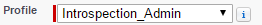 In the User Edit > General Information section, enable Salesforce CRM Content User. This allows the user to view the CRM content files and is required to list and take actions on the Salesforce CRM Content or Library files.

When finished, click Save.
Important
Netskope recommends allowing a pool of Netskope public IP addresses in Salesforce. This will ensure events and notifications are exchanged between Salesforce and API Data Protection without any restrictions. To allow the IP addresses:
Log in to login.salesforce.com.
On the top right, click Setup > Setup.
In the left navigation bar, go to Settings > Security > Network Access.
Click New beside Trusted IP Ranges.
In the Trusted IP Range Edit page, specify the Start IP Address and End IP Address.
Note
To get a pool of Netskope public IP addresses, log in to your Netskope tenant, and navigate to Settings > Security Cloud Platform > REVERSE PROXY > Office 365 Auth. Scroll down to the Netskope Source IP Address/Range section.
Click Save.
Enable Listing of Private Files of Users
By default, a users' file is private in Salesforce. Netskope does not have visibility on private files due to the limitation of the Salesforce API. If you need visibility for such files, the Salesforce administrator can create a permission set to query private files of users and assign the permission set to the Netskope instance granting user.
To create a permission set:
Log in login.salesforce.com as an administrator.
On the home page, navigate to ADMINISTRATION > Users > Permission Sets.
On the Permission Sets page, click New.
The Create form opens.
In Label, enter Query_All_Files.
In Description, enter Enable this permission set to let your View All Data users bypass the restrictions on querying files.
From the License drop-down list, select Salesforce.
Click Save.
You are navigated to the Query_All_Files permission set overview page.
Under Apps, click App Permissions.
Beside the App Permissions label, click Edit.
Under App Permissions > Content, select the Query All Files checkbox.

Click Save and confirm permission changes.
Click Manage Assignments.
Click Add Assignments.
From the All Users list, select the user who will grant access to Netskope and click Assign and Done.
(Optional) Install Netskope Audit Reports and Legal Hold Destinations Apps
Note
You can install the Netskope Audit Reports and Legal Hold Destinations Apps if you have a requirement to view Salesforce audit events and preserve relevant information in a legal hold destination respectively. However, installing these apps are optional. DLP policy processing works as expected if you do not install these apps.
Netskope can support audit reports and legal hold destinations on your Salesforce account. If you plan to use one or both functionalities, you can get these apps from the Salesforce AppExchange portal.
There are two audit reports apps. Based on your salesforce edition, you can install either version 1.0 or 2.0:
Salesforce Edition | Audit Reports Plugin Version | Key Differences |
|---|---|---|
Professional | Audit Reports v1.0 |
|
Enterprise | Audit Reports v2.0 |
|
Unlimited |
Audit Reports v1.0: https://login.salesforce.com/packaging/installPackage.apexp?p0=04t28000000XUIk
Audit Reports v2.0: https://login.salesforce.com/packaging/installPackage.apexp?p0=04t0K000001VLOf&isdtp=p1
Legal Hold Destinations: https://login.salesforce.com/packaging/installPackage.apexp?p0=04t28000000VfUV
Note
If you would like to install the apps on your Salesforce sandbox environment (test.salesforce.com), you can use the following links:
Audit Reports v1.0: https://test.salesforce.com/packaging/installPackage.apexp?p0=04t28000000XUIk
Audit Reports v2.0: https://test.salesforce.com/packaging/installPackage.apexp?p0=04t0K000001VLOf&isdtp=p1
Legal Hold Destinations: https://test.salesforce.com/packaging/installPackage.apexp?p0=04t28000000VfUV
Note
It is recommended to install the apps before the API Data Protection instance is set up so that the required custom objects are in place to add records. Custom objects are place holders for audit and/or legal hold data. For more information on custom objects, read this Salesforce article located here.
Install Netskope Audit Reports App
If you install Audit Reports v2.0, you should enable Change Data Capture for the five object types Netskope supports. To do so, follow the steps below:
Log in to login.salesforce.com as an administrator.
In the left navigation bar, go to PLATFORM TOOLS > Integrations > Change Data Capture.
Move the following entities from Available Entities to Selected Entities:
Account (Account)
Case (Case)
Contact (Contact)
Lead (Lead)
Opportunity (Opportunity)

Click Save.
To install the Netskope Audit Reports app, follow the steps below:
Note
This procedure applies to Audit Reports v1.0 as well as v2.0.
Access the appropriate link to install the Netskope Audit Reports app:
Log in to login.salesforce.com as an administrator.
On the Install Package page, you can see the package details and the option to select the user base you want to install the app for. Select any one from the options below:
Install for Admins Only - Installs the package for Salesforce admin users only. Netskope gets triggers/events for admin users only.

Install for All Users - Installs the package for all users. Netskope gets triggers/events for all users.
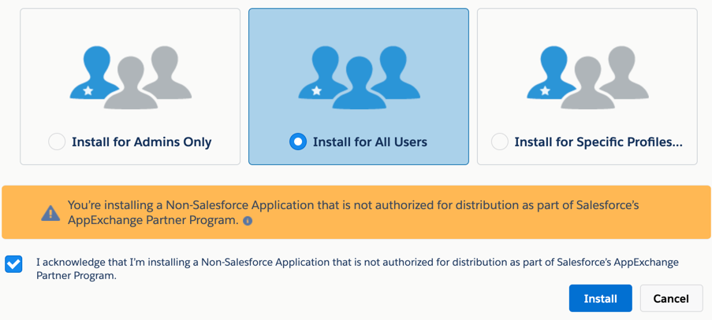 Note
The installation does not apply to the following users/profiles in Salesforce: Customer Portal User, Customer Portal Manager, High Volume Customer Portal, Authenticated Website, Partner User, and standard profiles.
Install for Specific Profiles - Installs the package for users for a specific profile. Netskope gets triggers/events for users who belong to the specific profile.

In the Select Specific Profiles section of the page, scroll down to the custom profile you created in Configure Salesforce API Access and assign Full Access as the access level to this profile. In the figure below, Introspection_Admin is the custom profile created.
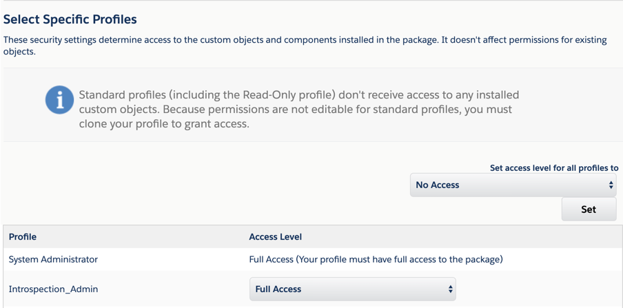 Note
By default, access level for the System Administrator installing the app package is set to Full Access.
Select the acknowledge checkbox, and then click Install.
Upon successful installation, click Done.
Upon successful installation, the necessary apex triggers and a custom object Netskope Audit Log are created.
After installation of the Netskope Audit Reports App, in the Home tab of the Salesforce home page, go to Administration > Users > Profiles and click the custom profile you created in Configure Salesforce API Access. On the custom profile details page, click Edit and scroll down to the Custom Object Permissions section and verify if all the permissions are provided for the Netskope Audit Log. If not, enable all the check-boxes for Netskope Audit Log.
| 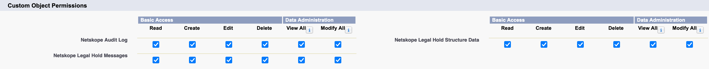 |
Note
At any point in time, Netskope retains audit data from the last twenty-four hours. Anything older is deleted.
Netskope records audit activities only for the profiles / users granted at the time of installing the package.
At any point of time if the user intends to enable audit activities for users / profiles, reinstall the package as described in steps 3-5 (above).
Netskope uses the triggers to capture audit events. You can view these events by logging in to the Netskope tenant and navigating to Skope IT > Application Events. For additional information on the audit events, see Salesforce Audit Events.
Note
If you have installed the Audit Reports v2.0 and a user performs an edit operation on an audit object, Netskope's Skope IT displays the the new value only. The old view is not displayed.
Upgrade Audit Reports v1.0 to v2.0
Existing customers who have already installed Audit Reports v1.0 can upgrade to Audit Reports v2.0. However, you can upgrade only if you have an enterprise or unlimited edition of salesforce. Here are the broad steps to upgrade:
Enable Change Data Capture for the five object types Netskope supports on your Salesforce account. Follow the steps in the previous procedure.
Access the Audit Reports v2.0 app from https://login.salesforce.com/packaging/installPackage.apexp?p0=04t0K000001VLOf&isdtp=p1.
When prompted to upgrade, select the user base you want to install the app for, select the acknowledge checkbox, and then click Upgrade.

Install Netskope Legal Hold Destinations App
To install the Netskope Legal Hold Destinations app, access this link at https://login.salesforce.com/packaging/installPackage.apexp?p0=04t28000000VfUV, and then follow the steps 2-5 as described in Install Netskope Audit Reports App.
After the installation of the app package, two custom objects and two tabs get created. The users who are assigned the custom profile or system administrator profile have access to these objects and tabs. These tabs can be accessed from App Launcher in the Salesforce home page.
 |
In the App Launcher home page, go to Platform Tools > Objects and Fields > Object Manager to view the custom objects which are used as destinations for legal hold.
| 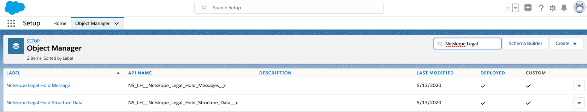 |
Define Legal Hold Destinations
There are three legal hold destinations used in Salesforce. They are:
Netskope Legal Hold Message: This is a custom object to store legal hold copies of Chatter messages present in Chatter conversations. This object and the associated fields get created automatically after installing the Netskope Legal Hold App from the Salesforce AppExchange portal.
Netskope Legal Hold Structure Data: This is a custom object to store legal hold copies of Chatter posts and structured data such as account, contact, lead, and more, and a mapping record for legally held messages of a Chatter conversation. This object and the associated fields get created automatically after installing the Netskope Legal Hold App from the Salesforce AppExchange portal.
Netskope Legal Hold Group: For legal hold of Salesforce files, documents, attachments, a dedicated destination is required. Netskope uses a Chatter group called Netskope Legal Hold Group for this purpose. Legally held files, documents, attachments can be listed and accessed from this Chatter group. Follow the steps below to create a Chatter group:
Login to login.salesforce.com.
Go to App Launcher > View All and click Salesforce Chatter and click the Chatter tab.
On the left navigation, click the + icon (as part of Recent Groups) to create a new Chatter group.
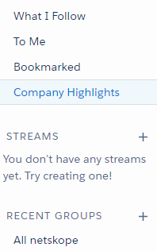In the New Group window, enter the name of the group as Netskope Legal Hold Group.
Select the Disable automatic archiving checkbox. This ensures that the group remains active.
In the *Access Type drop-down list, select Private. This ensures that only members can see updates. Membership requires approval.

Click Save & Next > Next > Done to finish the Chatter group creation setup.
Configure Netskope Access for Salesforce
To configure the API connectors, you need to authorize Netskope as a web application client to access your Salesforce instance.
To authorize Netskope to access your Salesforce instance:
Log in to the Netskope tenant UI:
https://<tenant hostname>.goskope.comand go to Settings > API-enabled Protection > SaaS > Classic.Select the Salesforce icon, and then click Setup Instance.
The Setup Instance window opens. Enter the following details:
In the INSTANCE NAME field, enter the organization name or ID of your Salesforce account. To locate the organization name or ID in salesforce.com, log in to the salesforce.com account. Navigate to Setup > Setting > Company Settings > Company Information and note down the Organization Name or Salesforce.com Organization ID.
Important
Under a single organization name, you can create one production and one sandbox instance only in the Netskope tenant.
In order to set up more than one Salesforce instance under the same organization name, Netskope recommends using the organization ID of the Salesforce instances as the instance name in the Netskope tenant.
In the INSTANCE TYPE field, select the appropriate features from the following options:
API Data Protection: Select this option to allow Netskope to scan through your SaaS app instance to list files, user, and other enterprise data.
To use the Legal Hold feature in Salesforce, enable the Legalhold checkbox. Make sure that you have the Legal Hold app installed from the Salesforce AppExchange portal as described in (Optional) Install Netskope Audit Reports and Legal Hold Destinations Apps. When successfully enabled, you can create policies to place files and chatter messages on legal hold.
Malware: Select this option to detect malware in files, emails, attachments, chat messages, posts etc. For more information to set up malware, see Creating a Threat Protection Policy for API Data Protection.
To get audit reports in Salesforce, enable the Auditreports checkbox. Make sure you have the Audit Reports app installed from the Salesforce AppExchange portal as described in (Optional) Install Netskope Audit Reports and Legal Hold Destinations Apps.
To use the Bring Your Own Key feature in Salesforce, enable the Byok checkbox. Doing so creates a Salesforce Key Management page in the API Data Protection dashboard that allows you to configure the needed secret tenant and certificate. Refer the Salesforce Key Management of the API Data Protection dashboard.
Important
Salesforce Key Management is a feature that allows customers to use Salesforce's Bring Your Own Key (BYOK) feature to encrypt Salesforce data at rest. Netskope today provides customers the option of rotating/managing these keys from the Netskope console. Note that this feature is now deprecated, which means Netskope will not support this capability in any new commercial or federal Netskope DC.
Note that deprecation of this feature only means that you cannot rotate/manage the encryption keys from Netskope. You can continue using the BYOK feature within Salesforce without impacting Netskope’s API Data Protection for Salesforce.
Fine prints as follows:
For new Salesforce app instances, the UI will not have a BYOK checkbox. New instances cannot enable BYOK.
For existing Salesforce app instances that have not enabled BYOK, cannot enable it going forward.
Existing Salesforce app instances that are using BYOK, can disable BYOK. However, once disabled, you cannot re-enable it.
Salesforce Key Management page under Salesforce API-enabled Protection dashboard will not be available for tenants who have not enabled BYOK.
For existing Salesforce app instances that have enabled BYOK, the feature will continue to work as expected.
Security Posture: Select this option to allow Netskope to continuously scan through your SaaS app to identify and remediate risky SaaS app misconfigurations and align security posture with best practices and compliance standards.
Note
This feature is part of the Netskope SaaS Security Posture Management solution. For additional configuration requirement, read SaaS Security Posture Management.
Select the type of Salesforce account you want for the API Data Protection; production, or sandbox.
Note
Select the production account type if connecting a developer edition instance created in developer.salesforce.com. The sandbox account type is only intended for sandbox organizations, which are copies of production organizations and not the same as a Salesforce organization with a developer edition license.
Enter the username of the Salesforce user that will grant access to API Data Protection. The username should be the same user who has the Query All Files permission set in Salesforce as per step 14 under Enable Listing of Private Files of Users.
Click Save, then click Grant Access for the app instance you just created. You will be prompted to log in with your admin username and password, accept the permissions, and then click Grant. When the configuration results page open, click Close.
Note
API Data Protection can monitor Salesforce Chatter posts. A Chatter post is a feature in Salesforce where you can post a message in a private or public Chatter group. To allow API Data Protection to monitor Chatter posts, contact Netskope Support. Once API Data Protection monitors Chatter posts, it should be noted that Salesforce may send multiple notifications to API Data Protection. And this may result in the consumption of more API calls.
Refresh your browser and you will see a green check icon next to the instance name.
Grant Failure Due To Login IP Range
The grant access may fail if the Salesforce username has any Login IP Ranges configured in Salesforce. Log in to your Salesforce account and verify if the user profile associated with the username has Login IP Ranges configured. If configured, follow the procedure below. The following procedure will ensure that the grant goes through successfully.
Log in to login.salesforce.com.
On the top right, click Setup > Setup.
On the left navigation pane, go to PLATFORM TOOLS > Apps > Connected Apps > Connected Apps OAuth Usage.
Beside the Netskope Introspection for Salesforce app, click Install.
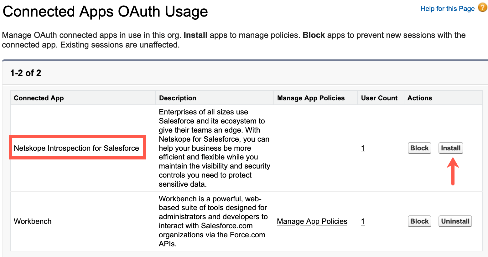 A new window opens. Click Install.
On the Netskope Introspection for Salesforce Connected app page, click Edit Policies.
Under OAuth Policies, set IP Relaxation to Relax IP restrictions.
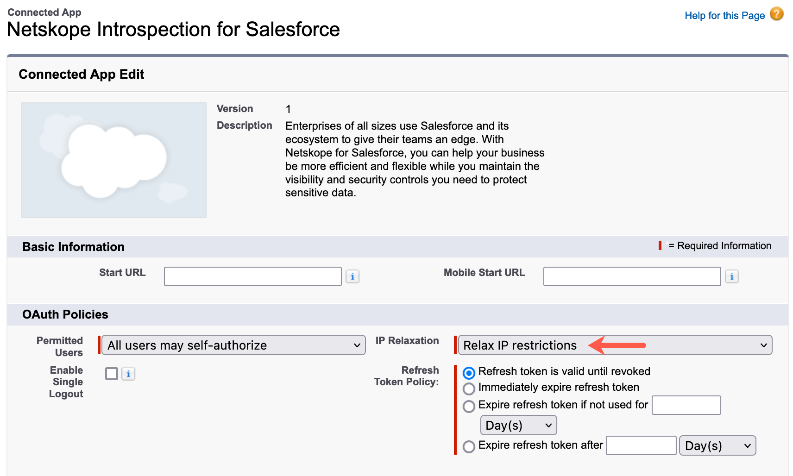 Click Save.
Log back in to your Netskope tenant and grant access to your Salesforce app.
The grant should go through successfully.
(optional) Post successful grant, you can rollback IP Relaxation to Enforce IP restrictions.
Netskope API Data Protection OAuth Refresh Token Policy
Once you have successfully granted access, the Salesforce administrator should ensure that the Netskope API Data Protection OAuth refresh token is valid until revoked. To do so:
Log in to login.salesforce.com.
On the top right, click Setup > Setup.
On the left navigation pane, go to PLATFORM TOOLS > Apps > Connected Apps > Manage Connected Apps.
Click the Netskope Introspection for Salesforce app.
Click Edit Policies.
Under OAuth Policies, set Refresh Token Policy to Refresh token is valid until revoked.
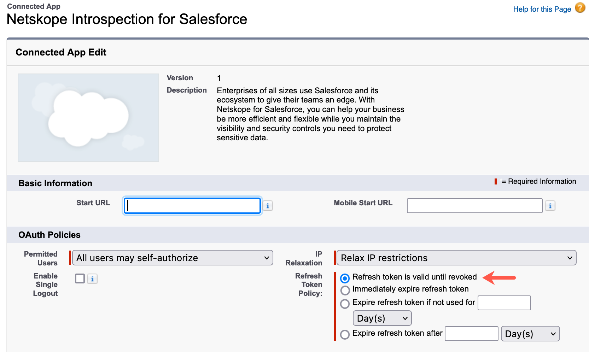 Click Save.
What File does Netskope Inspect for DLP?
Salesforce's API integration with Netskope can inspect files that are uploaded and accessible by other users in the account. Netskope uses APIs and permissions specified by Salesforce to scan these files for sensitive content as per policies set in the Netskope UI. The policies can either take an alert or legal hold action based on the policy definition and when a file matches a DLP profile.
However, there are some limitations to this based on how the Salesforce API works, and the information that is returned to Netskope through an API call. Refer the following table for more information:
Location | Uploaded by User | DLP Scanning Possible? | Notes |
|---|---|---|---|
Files tab | Administrator or Non-Administrator NoteFor non-administrator user, Enable Listing of Private Files of Users. | Yes | - |
Chatter | Administrator or Non-Administrator | Yes | Contact Netskope Technical Support to get this enabled. |
Documents tab | Administrator or Non-Administrator | Yes | Salesforce API returns files and folders that are configured as “Accessible to all users”. Files and folders set as “Private” or shared only with specific users, are not returned by the API. |
Attachments to standard objects | Administrator or Non-Administrator | Yes | - |
Salesforce CRM content | Administrator or Non-Administrator | Yes | Salesforce API returns content for shared libraries only. It does not return content for private libraries. |
Salesforce Knowledge Base | Administrator or Non-Administrator | No | - |
(Optional) Delete the Salesforce App Instance
Note
This procedure should be followed only if you want to decommission the Salesforce and Netskope integration.
If you intend to delete the Salesforce app instance from the Netskope UI, ensure that you uninstall the Netskope Audit Reports and Legal Hold Destinations apps from your Salesforce account. To do so, log in to your Salesforce account. On the setup home page, navigate to PLATFORM TOOLS > Apps > Packaging >Installed Packages. Under Action, click Uninstall.